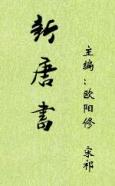

| 历史史籍 > |
| 新唐书 |
| 宋祁、欧阳修 主编 |
|
新唐书，纪传体断代史，二十四史之一，本纪10卷、志50卷、表15卷、列传150卷，共225卷。宋仁宗赵祯认为石晋刘昫《唐书》“纪次无法，详略失中，文采不明，事实零落”，庆历四年（1044）下诏重修，前后修史历经17年，于嘉祐五年（1060）完成。前后参预其事的有宋敏求、范镇、宋祁、欧阳修、吕夏卿、梅尧臣等。 《新唐书》所依据的唐人文献及唐史著作均审慎选择，删除当中的谶纬怪诞内容，裁减旧史本纪十分之七。总的说来，列传部分主要由宋祁负责编写，志和表分别由范镇、吕夏卿负责编写。最后在欧阳修统一主持下完成。本纪10卷、赞、志表的“序”以及《选举志》《仪卫志》等都出自欧阳修之手。但欧阳修认为宋祁是前辈，没有对宋祁所写的列传部分从全书整体的角度作统一工作，因而《新唐书》存在着记事矛盾、风格体例不同的弊端。 [2019-1-5重新整理] |
 |